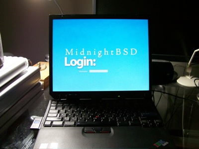
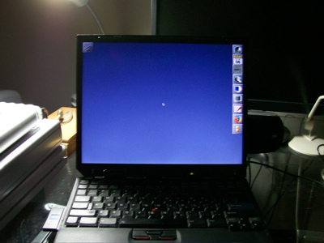

Introduction
MidnightBSD is a desktop operating system for x86 compatible (including Pentium® and Athlon™), and soon amd64 compatible (including Opteron™, Athlon™64, and EM64T) architectures. It was originally based on FreeBSD 6.1 Beta. The goal of the project is to create a BSD with ease of use and simplicity in mind.
We've released two versions of MidnightBSD: 0.1 and
0.1.1.
0.2 is under development.
|  | ||
|  | ||
Watch demo movie in QuickTime format.
Installing MidnightBSD videos:
Video 1
Video 2
or
part 1
part 2
part 3
part 4
All of the install videos are on Google Video and the various MidnightBSD FTP mirrors.
Security
April 17, 2008
OpenSSH was updated to 5.0p1 in CURRENT to correct an issue with X11 forwarding. A patch for
this issue was committed to RELENG_0_1 as well as a fix for a config file issue.
A security issue was found in mksh. This only affected CURRENT users. The software was updated to r33d
April 6, 2008
bzip2 was updated to 1.05 in CURRENT to correct a security issue.
April 3, 2008
A security issue was found with strfmon in libc.
CVE-2008-1391 Integer Overflow.
This was fixed in CURRENT.
February 15, 2008
CURRENT now has a patch to correct a potential security issue with sendfile. Files were not checked prior to serving which would allow a file that was write only to be served. While this scenario is rare, we decided to fix it anyway.
sendfile is used by many daemons including Apache httpd.
August 1, 2007
BIND and Tcpdump were patched in 0.2 and 0.1 for recent security issues. BIND is now equivalent to 9.3.4p1.
May 2, 2007
CURRENT and STABLE both have the patch for ipv6 type 0 routing headers. The problem is that ipv6 routing headers could be run over the same link multiple times.
March 10, 2007
While many of the DST changes were imported last year, we decided to cover all cases and import
the latest tzdata2007c. Users concerned about DST changes should update their sources
and rebuild. The java ports may not have DST changes in place. We will review that issue.
Jaunary 23, 2007
A "symlink" exploit was found in the MidnightBSD jail system. A fix was made available. Please
update your /etc/rc.d/jail file from cvs. Patches will not be created until our first release.
Recent CVS Activity
Developer Journal